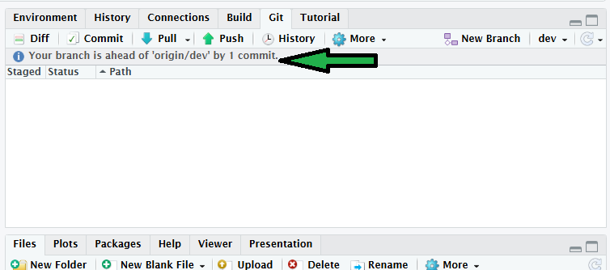

Block 1: Github
Why version control?
Git is a version-control system: a tool that records the history of changes to a set of files so that any previous state can be recovered. It was originally built for collaborative software development, but it is now standard infrastructure in data science and reproducible research.
For an R user working alone, Git provides three concrete benefits. It records a complete history of your analysis, so a mistake can always be undone by returning to an earlier state. Paired with a remote host such as GitHub, it gives you an off-site backup. And when you publish, the full provenance of your results — data, scripts, figures and reports — is available to others.
For a team, Git adds a fourth benefit: it is a mechanism for combining the work of several people on the same files without overwriting one another, and for reconciling the inevitable conflicts in a controlled way.
A well-organised project under version control keeps every component together and tracked:
- 🔢 Data
- ✍️ Scripts
- 📊 Figures
- 📝 Reports
The mental model
You do not need to understand Git’s internals to use it well, but you do need one mental model.
A Git repository (or repo) is a project folder whose change history Git tracks. Within it, a file passes through three states:
- Untracked / modified. You create or edit a file. Git sees that it has changed but does nothing with it yet.
- Staged. You add the file to the staging area, marking it for inclusion in the next snapshot.
- Committed. You commit the staged changes, writing a permanent, labelled snapshot into the repository’s history.
The everyday loop is therefore modify → add → commit, repeated whenever you reach a natural stopping point. A useful discipline is to commit each time you complete a discrete task, so that each commit corresponds to one coherent change.
These actions exist both as buttons in the RStudio Git pane and as terminal commands. The two are equivalent; this workshop uses the RStudio interface, but the terminal forms are shown alongside so you can recognise them.
NoteThe same actions at the command line
Local versus remote
Everything above describes the local workflow, where the repository lives only on your machine. A local repository can also be connected to a remote repository hosted on a server. This workshop uses GitHub; GitLab is a common alternative.
Two further actions move commits between local and remote. You push to send your local commits up to the remote, bringing the two into agreement. When a collaborator pushes their commits, your local copy becomes outdated, and you pull to bring those commits down.

One-time setup
Before creating your first repository, three things must be in place: Git must be installed, Git must know who you are, and Git must be able to authenticate to GitHub on your behalf. You do this once per machine.
Install Git and create a GitHub account
Install Git on your machine.
Create a free account at github.com.
Note
You can confirm that RStudio can see your Git installation under Tools → Global Options → Git/SVN, where the path to the Git executable should be shown.
Introduce yourself to Git
Git labels every commit with a name and email. Set these once, using the usethis package:
Use the email associated with your GitHub account. The equivalent at the command line is:
Authenticate with a Personal Access Token
GitHub no longer accepts account passwords for Git operations; it uses a Personal Access Token (PAT) instead. The recommended workflow for R users keeps you inside R and stores the token in your operating system’s credential manager rather than in any file.
Step 1 — generate a token. This opens a GitHub page with sensible scopes pre-selected. Give the token a descriptive name, set an expiry, and generate it. Leave the page open and copy the token to your clipboard.
Step 2 — store the token. This registers the token with your OS credential store, from which usethis, gh and gert retrieve it automatically. Paste the token when prompted.
Step 3 — verify. Either of these confirms that a valid, discoverable token is in place and reports its scopes:
WarningDo not store your token in a tracked file
Earlier guidance sometimes suggested saving the PAT in a plain-text file or in .Renviron. The current recommendation from the usethis maintainers is to store it only in the OS credential manager via gitcreds_set(), and to treat the token like a password. On Windows and macOS the credential manager persists the token indefinitely, so you should not need to re-enter it. If you have a legacy GITHUB_PAT line in .Renviron, delete it, as it can interfere with the credential-store approach.
Create a repository (GitHub first)
There are several ways to start a repository. The “GitHub first” approach — create the remote repository, then clone it locally — is the most reliable because it lets GitHub configure the link between local and remote for you, avoiding a common class of setup errors.
Create the remote repository
- Log in at github.com.
- Click the + in the top-right corner, then New repository.
- Template: none.
-
Name: e.g.
my-first-repo. - Description: a short, human-readable summary.
- Visibility: Public.
- Initialise with: nothing (you will configure everything from R).
- Copy the repository URL before leaving the page.
Clone into RStudio
In RStudio: File → New Project → Version Control → Git. Paste the repository URL into the “Repository URL” field, choose a parent folder, and click Create Project.
The resulting folder is simultaneously a Git repository, a clone linked to your GitHub remote, and an RStudio Project. The clone also includes a .gitignore file listing files Git should not track (for example .Rhistory).
Tip
Open .gitignore and read it. Adding a filename here keeps that file local and prevents it from ever being pushed to GitHub — useful for large data, cached output, or anything sensitive.
The solo local cycle
This section covers the modify → add → commit loop entirely on your own machine.
WarningInstall packages first, but never inside a script
The exercise below uses tidyverse and palmerpenguins. Install them once at the console with install.packages(c("tidyverse", "palmerpenguins")) — or renv::install() if you use renv. Never place install.packages() inside a script or Quarto document, as it would re-download the packages on every run. Note the package is palmerpenguins, with a trailing s.
Task: track some changes
Note
For html you need to embed resources if you wish to share a single file, otherwise things like images will be contained in a separate folder
See what has changed
The RStudio Git pane lists every file that has been added, modified or deleted since the last commit. An icon indicates the kind of change:


Right-click a file and choose Diff to see line-by-line changes:

Added text is shown on a green background and removed text on red. If you have a colour-vision deficiency, the line numbers in the two left-hand columns indicate which side each change belongs to.
Stage and commit
A commit is a labelled snapshot of your project at a moment in time. Git gives each commit a unique identifier and records who made it and when.
NoteCommit your changes
In the Git pane, tick the checkbox beside the file to stage it.
Click Commit, write a descriptive message — phrase it as what the change does, e.g. “Add setup chunk loading tidyverse and palmerpenguins” — and confirm.
Tip
You can stage files selectively, but most of the time you will stage everything that has changed since the last commit.
Commits are stored locally. The Git pane shows how many commits your local repo is ahead of the remote.

The solo remote cycle
Push
NotePush your commits
Click Push (the green up-arrow) in the Git pane. Nothing appears on GitHub until you push.
Refresh your repository page on GitHub: the committed files now appear. Click Commits to browse the history; each entry lets you inspect the project’s state at that point and view the file differences.
Make a change on GitHub, then pull
You can also edit directly on GitHub. Doing so creates a divergence that you must then bring back down to your local copy.
Task: : add a README and pull it
- On the repository main page, click Add a README.
- Write a short description (READMEs are written in Markdown).
- Enter a commit message at the bottom and click Commit new file.
- Back in RStudio, click Pull (the blue down-arrow). The README should appear among your local files.
WarningPull before you start, to avoid merge conflicts
Changes made on GitHub exist only on the remote until you pull them. If you edit a file locally while your copy is out of date, you risk a merge conflict — Git cannot reconcile two incompatible versions of the same lines and asks you to resolve it by hand. To avoid this, pull at the start of every session before doing anything else. The message is usually “Already up to date”, but the habit is worth keeping.
Working with branches
A branch is an independent line of development. Branches let you work on a new analysis, a manuscript section, or a bug fix without disturbing the stable main branch. When the work is ready, you merge it back into main.
Create a branch on GitHub
Task: create a branch
- On the repository page, click the branch drop-down (showing
main). - Type a new branch name, e.g.
new-plot, and press Enter to create it.

Work on the branch in RStudio
- Click Pull to retrieve the new branch.
- In the Git pane, use the branch drop-down (next to New Branch) to switch to
new-plot. This is “checking out” the branch. - Work proceeds exactly as before: stage, commit, push. Commits go to
new-plotand leavemainuntouched until you merge.
NoteAdd a figure on the branch
Add a chunk that produces a figure, then commit and push it to new-plot.
```{r}
#| label: fig-penguins
#| fig-cap: "Body mass against flipper length, by species."
library(tidyverse)
library(palmerpenguins)
pal <- c(
"Adelie" = "#FF8C00",
"Chinstrap" = "#A034F0",
"Gentoo" = "#159090"
)
penguins |>
ggplot(aes(x = flipper_length_mm, y = body_mass_g)) +
geom_point(aes(colour = species)) +
scale_colour_manual(values = pal) +
theme_minimal()
```Merge via a pull request
Back on GitHub, your pushed branch is offered for comparison. Merging it into main is done through a pull request (PR), which records the proposed change and lets it be reviewed before integration.
NoteOpen and merge a pull request
- Click Compare & pull request.
- On the next page, click Create pull request.

GitHub compares main with new-plot and confirms whether the two can be merged without conflict.

Click Merge pull request, then Confirm merge. Once merged, delete the branch with Delete branch, since its changes now live in main. Finally, return to RStudio, switch back to main, and Pull so your local main includes the merged work.

NoteDo I need Branches?
If you are working alone, branches are optional. You can work directly on main and push whenever you like. If you are working with others, branches are essential for keeping work organised and avoiding conflicts.
Keep branches short-lived and focused. You must resolve any merge conflicts by hand, and that is far simpler when a branch contains one small, coherent change.
Collaborating on a repository
Collaboration takes one of two forms, depending on whether you have write access.
With write access (typical for a team you belong to), you clone the repo and use the workflow above directly. GitHub checks your permissions when you push. The only additional requirement is communication: avoid two people editing the same file at once, which is the usual source of merge conflicts.
Without write access (typical when contributing to a stranger’s project, for example fixing a bug in an open-source package), you fork the repository. A fork is a personal copy under your own account, to which you have full access. You work in the fork as normal — modify, add, commit, push — and then open a pull request to propose your changes to the original. The owner may accept, reject, or request changes.

Exercise: contribute to someone else’s repository
Task: fork, edit, and open a pull request
- Log in at github.com (sign up with your institutional email if you do not have an account).
- Search for the repository Philip-Leftwich/5023Y-Happy-Git.
- Open it and review its structure.
- Fork the repository.
- Copy the clone URL and create a new RStudio Project via New Project → Version Control → Git.
- Open
some_cool_animals.qmdand its rendered output. - Add your name at the top of the document.
- Add a new section with your favourite animal: an image and a few facts.
- Render the document to update the output.
- Stage → Commit → Push all files.
- On GitHub, refresh to confirm the files have updated.
NoteOpen the pull request
- On your fork, click Open pull request.
- Click Create pull request.
- Add a title and message, then submit.
The repository owner receives a notification and can review, comment on, and choose whether to merge your contribution.
General workflow habits
Tip
Pull at the start of every session, to retrieve the current state from GitHub before doing any work. This is the single most effective habit for avoiding conflicts.
Commit and push in small, meaningful increments, often. You may make many commits in a session; always push before you finish.
Treated this way, your GitHub repository becomes the authoritative master copy of your project.
Publishing and reuse
A profile README
A profile README is displayed at the top of your GitHub profile page and lets you introduce yourself: your work and interests, contributions you are proud of, and how others can engage with your projects.

Useful guides:
Releases, tags, and a DOI
A tag marks a specific commit as a fixed point — a version release, a manuscript submission, or any milestone. Unlike a branch, a tag does not move as new commits are added, so it permanently records the exact state of your project at that moment. See GitHub’s guide to managing releases.
Once a project is a well-organised repository, generating a permanent DOI is close to a one-click process through Zenodo or Figshare. Each release can carry its own DOI, letting you cite distinct stages — a preprint and a peer-reviewed version, for example — in your papers.
TipA note on template repositories
When you created your first repository you were told to set Template: none. A template repository is an existing repository whose files and folder structure GitHub copies as the starting point for a new one, which is useful when you repeatedly create projects with the same layout (a standard folder structure, a licence, a .gitignore, and so on). You did not need one here, but once your own projects settle into a consistent shape, marking a repository as a template can save setting it up by hand each time. See GitHub’s guide to creating a template repository.
Do not confuse this with the project and document templates offered inside RStudio and Quarto, which are a separate mechanism.
Glossary
| Term | Definition |
|---|---|
| clone | A copy of a repository on your own computer, still linked to the remote so changes can be pushed and pulled to keep them synced. |
| commit | An individual, labelled change to a set of files. Git assigns each commit a unique ID and records who made it and when. |
| commit message | Short text accompanying a commit that describes the change it introduces. |
| fork | A personal copy of another user’s repository under your own account, from which you can open pull requests back to the original. |
| Git | An open-source system for tracking changes in files; the technology GitHub is built on. |
| Markdown | A lightweight text format for writing prose with simple structural markup (links, lists, headings). |
| pull | Fetching commits from the remote and merging them into your local copy. |
| push | Sending your committed changes from the local repo to the remote. |
| README | A text file describing a repository’s contents; usually the first thing a visitor reads. |
| repository (repo) | The basic unit of GitHub: a project folder containing all files and their full revision history. |
| Quarto | A publishing system that interleaves Markdown prose with executable code chunks (including R) to render many output formats. |
| personal access token (PAT) | A token used in place of a password for Git operations over HTTPS. |
Further reading
- Happy Git and GitHub for the useR, Jenny Bryan et al. — the definitive reference for the workflow taught here.
Bonus exercise: resolving merge conflicts
Practise handling merge conflicts in a collaborative setting using this NCEAS exercise. You will need a partner.